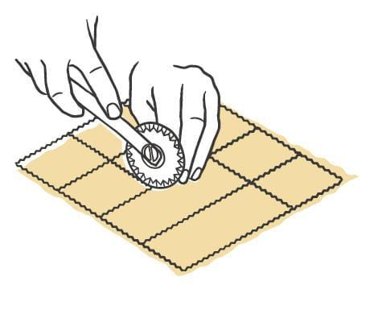
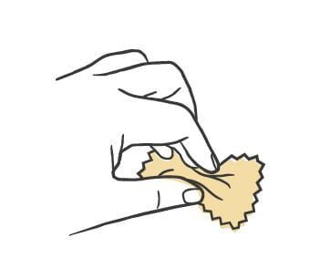
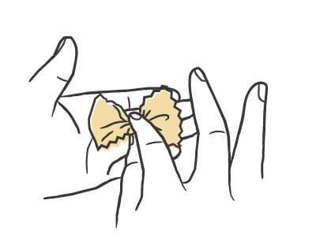
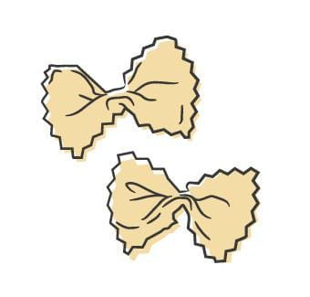
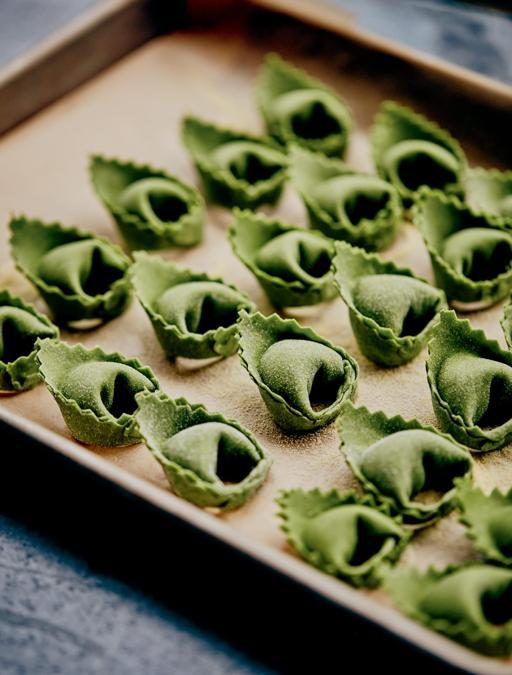

Pasta / Shapes
Stricchetti
- Dough
- Egg Dough
- Rest
- 3 to 4 hours at room temperature
- Source
- Pasta, Missy Robbins
- Formed
- shaped
- Region
- Emilia-Romagna, and across the rest of Italy under other names
Shaping





Method
- Make an egg-based dough, then roll and sheet it.
- Dust a wooden board with a little 00 flour. Line a sheet pan with parchment, then dust the parchment with semolina.
- Lay the sheets on the board and cut them into rectangles 1 1/2 by 2 inches with a fluted dough divider, or a fluted pastry cutter against a ruler. Cover the rectangles with plastic wrap or a towel.
- Put your index finger and thumb opposite each other at the middle of a rectangle and pinch the top and bottom edges together into a bow tie. Pinch hard; a loose center comes apart in the pot.
- Shape the rest, laying them on the sheet pan in a single layer.
- Dry 3 to 4 hours at room temperature, until the pinched center feels firm. To check, boil a single one and see whether it keeps its shape.
- To hold it, wrap the pan in plastic and refrigerate up to 24 hours.
Notes
- Cut size is 1 1/2 by 2 inches, fluted on every edge, giving a finished bow tie about 2 inches long. Other makers go from about an inch up to considerably larger.
- Needs a fluted dough divider or a fluted pastry cutter; a ruler helps keep the rectangles square. The forming gesture is a single hard finger-and-thumb pinch at the center, which is where the dialect name comes from.
- This shape dries longer than any other egg pasta in the book, 3 to 4 hours rather than 1 to 2, because the pinch relaxes easily in boiling water. The boil-one test is the way to confirm it is dry enough.
- Better known as farfalle, or bow-tie pasta.
- Refrigerator limit is 24 hours.
- In Emilia-Romagna it goes into sauces built on vegetables with a little meat: prosciutto and peas in springtime, sausage with cardoons or cavolo nero once it turns cold. Butter and parmigiano is the plain version.